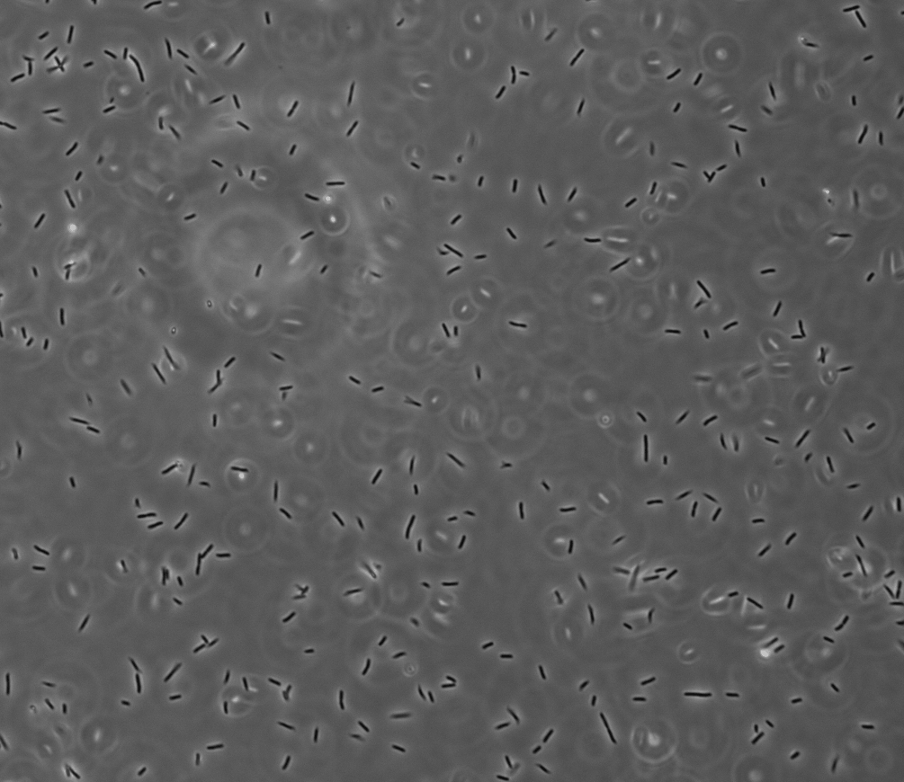

E. coli resistance to Bdellovibrio bacteriovorus predation
Master’s thesis investigating genetic and phenotypic determinants of resistance to bacterial predation.
Microbiologist with experience in experimental biology, bioinformatics, and data-driven research. Interested in roles relying on quantitative methods, computation, and problem solving.
Project Index →MSc
Microbiology
Bioinformatics Minor
University of Zurich
2022–2026
BSc
Biology
Humboldt University Berlin
2018–2022
Languages
German — native
English — fluent
RESEARCH & PROJECTS
Master’s thesis investigating genetic and phenotypic determinants of resistance to bacterial predation.
Deep-learning project using attention-based multiple instance learning to estimate CCS patient survival risk from histopathology slides.
Analysis of copy-number variation, SNPs, STRs, and population structure in cancer genomic datasets.
Bachelor’s thesis investigating putative small RNAs associated with motility-related genes.
METHODS & TOOLS
Bacterial genetics, cloning, mutant construction, RNA isolation and analysis, Northern and Western blotting, growth and survival assays.
Fluorescence microscopy, ImageJ, ilastik, and image-based quantification.
NGS data processing, sequence mapping, variant analysis, genome annotation, and population genetics.
Python, R, and SQL; PyTorch and TensorFlow for deep learning with biomedical image data.
PROJECTS
01 · MSc thesis
Investigated how E. coli can become resistant to predation by Bdellovibrio bacteriovorus.
Which genetic and phenotypic changes allow E. coli populations to survive bacterial predation?
Engineering and functional characterization of E. coli mutant strains.
Time-resolved growth and survival assays to quantify predation dynamics.
Microscopy to examine interactions between predator and prey cells.
Image-based quantification of experimental phenotypes.
Statistical analysis and interpretation of experimental results.
Mridha, S., Loose, S., Huwiler, S. et al. “Outer membrane changes enable evolutionary escape from bacterial predation.” bioRxiv, September 2024.
View preprint02 · Deep learning
A project from the Deep Learning in Biomedicine course focused on predicting patient survival risk from histopathology slides.
The project used attention-based multiple instance learning, a framework that makes it possible to work with large histopathology images represented as collections of smaller image regions.
Python, PyTorch, TensorFlow, image preprocessing, model evaluation, and survival-risk prediction.
03 · Bioinformatics
A bioinformatics project investigating genomic variation, population structure, and ancestry in cancer datasets.
The work included analysis of copy-number variation, single-nucleotide polymorphisms, short tandem repeats, and population structure.
PLINK, BLAST, Progenetix, PCA, and ADMIXTURE.
04 · BSc thesis
Investigated putative small non-coding RNAs located in motility-related genes during my bachelor’s thesis at Humboldt University Berlin.
I constructed bacterial mutant strains using cloning and phage-mediated transduction.
RNA and protein expression were assessed using Northern and Western blotting, while motility phenotypes were examined using fluorescence microscopy and flagella staining.
“Cloning and characterization of potential small non-coding RNA genes in Salmonella Typhimurium.” Charpentier/Turgay lab retreat, Berlin, November 2021.

EXPERIENCE
MEDICA, Zurich. Technical support in a clinical microbiology laboratory, including work related to pathogen identification.
Humboldt University Berlin. Led introductory mathematics tutorial sessions and supported students with foundational mathematical concepts.
EMP Biotech, Berlin.